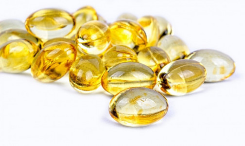

Контролировать только уровень витамина D и цинка при ковиде недостаточно, заявляют врачи.На дефицит каких веществ нужно еще обратить внимание

Главная функция витамина D в организме – регуляция кальциево-фосфорного обмена.Доказана и его связь с самыми различными заболеваниями (сердечно-сосудистыми, метаболическими, инфекционными, онкологическими и даже психическими).
'Ряд исследований показали и важную роль витамина D в развитии как врождённого, так и адаптивного иммунного ответа.Исследования о влиянии его на тяжесть течения ковида пока являются предварительными.Но адекватная концентрация витамина D в крови может являться одним из важных факторов защиты от развития тяжёлых форм коронавируса', - говорит Михаил Лебедев, ведущий эксперт Центра молекулярной диагностики CMD ЦНИИ эпидемиологии Роспотребнадзора.
Для профилактики тяжелого течения коронавирусной инфекции также важна способность витамина D снижать выраженность воспалительной реакции и цитокиновых эффектов, добавляет Марина Вершинина, ведущий эксперт Центра эпидемиологии Роспотребнадзора.
Что касается цинка, то этот микроэлемент играет важную роль в формировании Т-клеточного иммунитета, который необходим для эффективной защиты от новых атак вируса на переболевших ковидом или вакцинированных.
Определить дефицит этих витаминов и микроэлементов в организме можно, сдав анализ на концентрацию витамина D (25(OH)D) и цинка.Сделать это можно самостоятельно и по рекомендации врача.Но лучше провести полную проверку организма.
'Если вы недавно перенесли заболевание, то контролировать только лишь уровень витаминов и микроэлементов явно недостаточно.Нужны и другие важные показатели, которые помогут следить за процессом восстановления и, при необходимости, корректировать лечение, - говорит Марина Вершинина.- Профилактическое обследование тоже требует комплексного подхода: гиповитаминоз часто является лишь симптомом, следствием других неполадок со здоровьем и простым приемом витаминно-минеральных комплексов его не устранить.Важно отметить, что и другие вещества играют важную роль в обеспечении защитных процессов: железо, магний, марганец, витамины А, С, РР и многие другие.Эффективность сопротивления организма снижается при любом дисбалансе'.
Справка: Витамин D включает в себя в том числе витамины D2 и D3.Первый поступает в наш организм в небольших количествах и только с растительной пищей, второй синтезируется под кожей под воздействием ультрафиолета и поступает с пищей животного происхождения (жирные сорта рыбы, печень, яичный желток).
Цинк присутствует практически во всех органах и тканях человеческого организма и необходим для синтеза белков, принимает участие в процессах деления и дифференцировки клеток, процессах регенерации кожи, роста волос и ногтей, секреции сальных желез, способствует всасыванию витамина Е и поддержанию нормальной концентрации этого витамина в крови.
Posted On: 2021-03-17T21:00:00
Content Date: 2021-03-17
Download Date: 2021-06-20
Document ID: L0C04CX4T